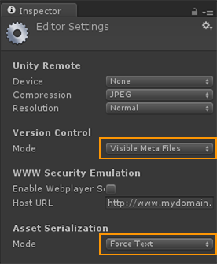
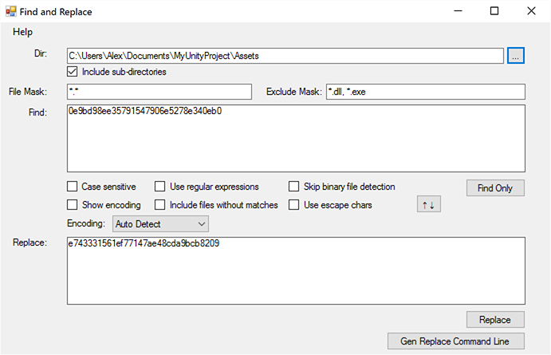

Unity uses Globally Unique Identifiers (GUIDs) to store references to components. GUIDs are stored in meta files.
Select Edit >Project Settings >Editor > Visible Meta Files to show meta files associated with each file in your project.
Meta files store the GUIDs for the associated file. For example, PlayMaker.dll.meta should show:
guid: e743331561ef77147ae48cda9bcb8209
If the PlayMaker GUID in your project is different you will have Missing Scripts after updating Playmaker!
This shouldn't happen, but if it does, there is a way to search and replace GUIDs across your project:
1. BACKUP YOUR PROJECT
Always backup your project before making large potentially irreversible changes!!
2. Enable Visible Meta Files and Force Text Serialization
Go to Edit >Project Settings >Editor and select:
- Version Control Mode: Visible Meta Files
- Asset Serialization Mode: Force Text

Save and close the project.
3. Find the current PlayMaker GUID
Find the PlayMaker.dll.meta file (normally in Assets\Plugins\PlayMaker\).
Open the file in a text editor and copy the GUID.
For example, let's say it's:
0e9bd98ee35791547906e5278e340eb0
4. Use a Find and Replace Tool to fix GUIDs
Download a tool that will find and replace text across multiple files.
For example: https://findandreplace.codeplex.com/
Use the tool to find and replace the GUIDs across all files in your project.
For example, with fnr.exe:

NOTES:
- Select your project's Assets folder as the root directory.
- Check Include sub-directories to scan all files in the project.
- Find the incorrect GUID and Replace with the correct GUID.
5. Update Playmaker
You can now update Playmaker without Missing Scripts errors since the GUIDs are now correct.
You can turn off Force Text Serialization if you want, since it is a little slower than the default Mixed Serialization.
You can turn off Visible Meta Files if you want. But it can be a good idea to keep these visible for Version Control.
How to avoid Missing Script Errors
- Always use the Project View to move files in a project.
- Use Export/Import UnityPackage to move files between projects.
- Turn on Visible Meta Files when using Version Control.
- Avoid moving project files in Windows Explorer or OSX Finder.
- Check for duplicate files in your project with different GUIDs.